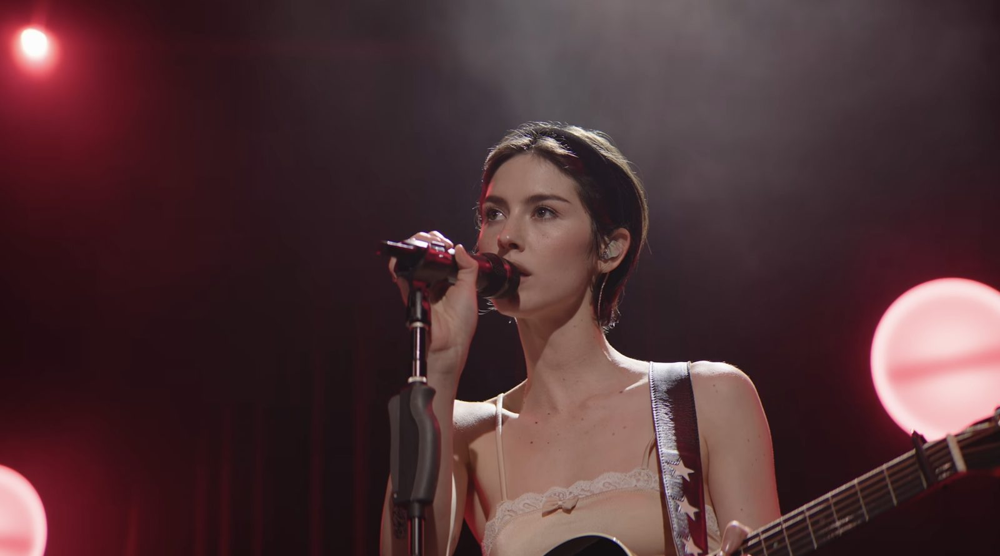
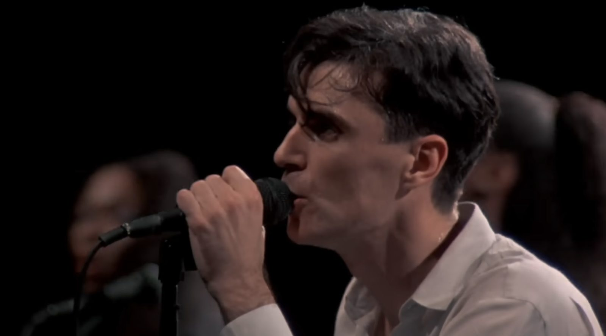
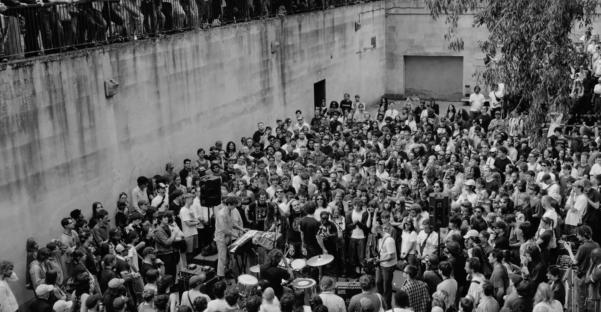
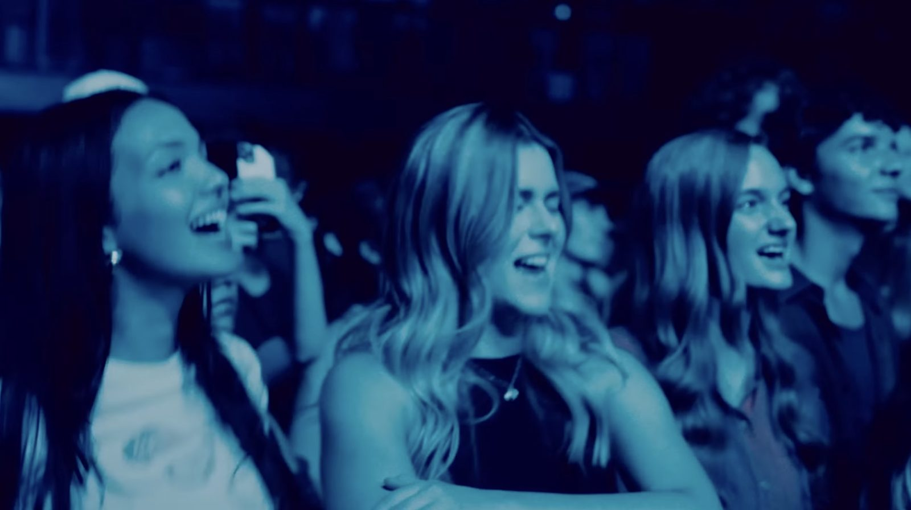
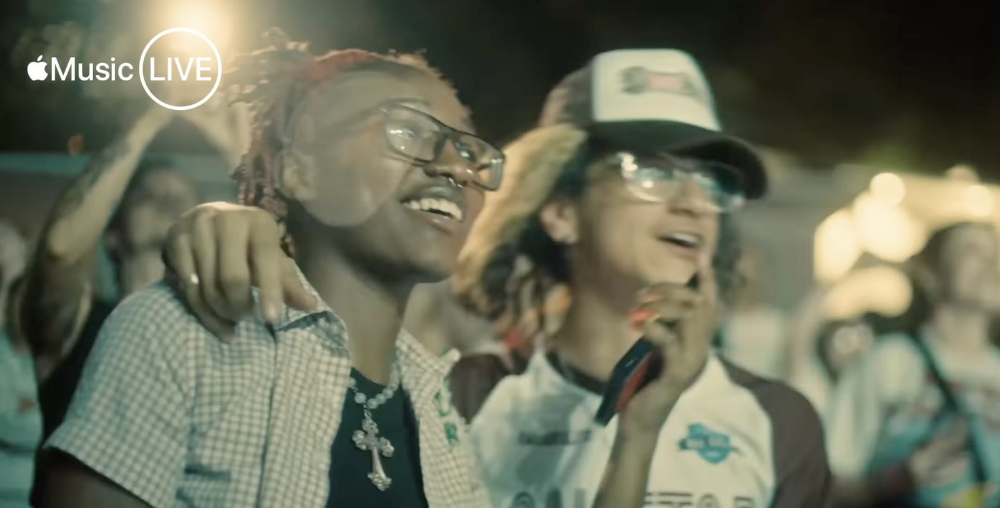
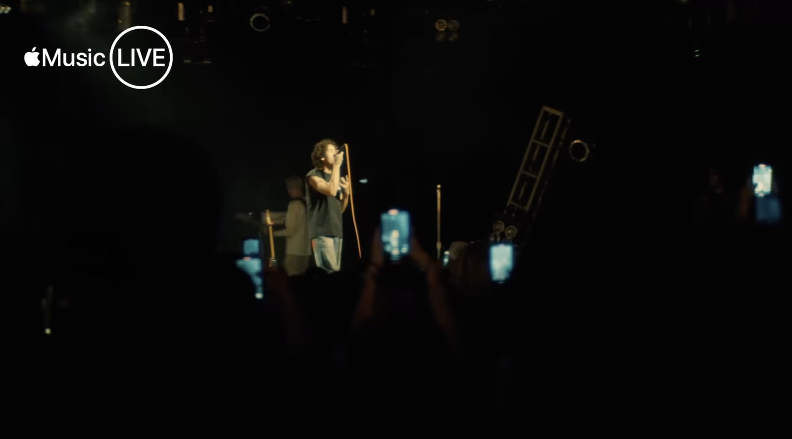
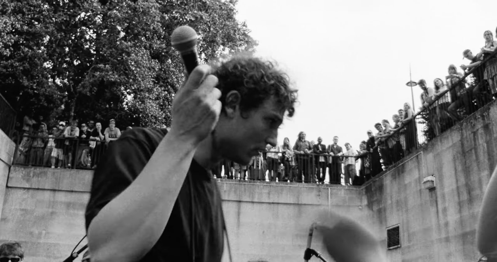
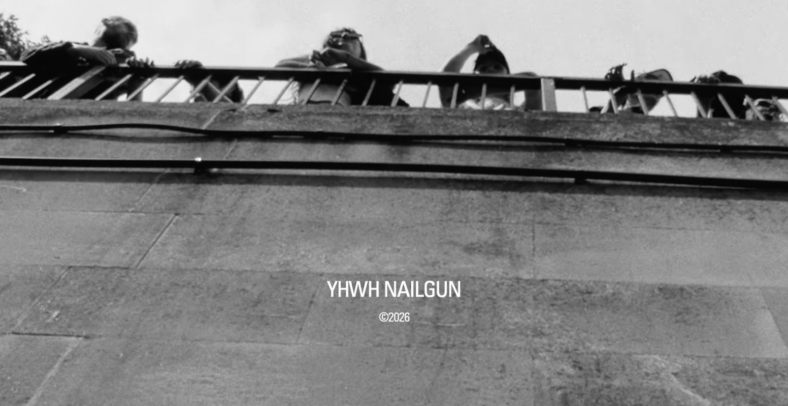
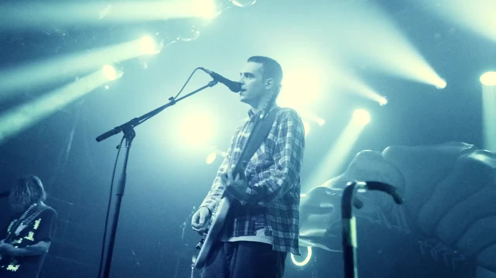
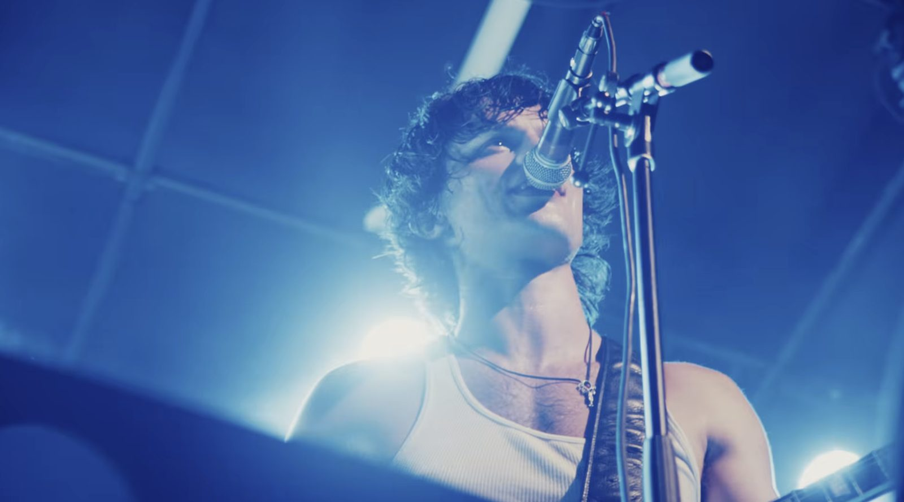

Florence Road
Live at
Bowery Ballroom
Overview
Song Wish Upon You
The song opens with a piano intro, then the cymbals come in.
Four cameras, four jobs: one on Lily, one on the room, one in the pit, and one on the band.
Together they give the edit close ups of Lily, a safety wide, front row energy, and coverage of the band. All four shoot the same clean look.
We'll capture scratch audio on every camera and record audience sound for the whole show, so the edit has the room cheering and singing along.
The rule for every operator: know your lane. If two cameras are getting the same shot, one of them is wasted.
Camera map
| Cam | Name | Position | Rig | Primary shot | Priority |
|---|---|---|---|---|---|
| A | Long Lens | Back of the main floor, on a riser | Tripod or monopod, long zoom | Lily MCU to CU, compressed | Hero angle |
| B | Room Wide | Mezzanine rail, center | Tripod, fluid head, long zoom | Full stage wide, slow push ins, crash zooms on choruses | Safety angle, never stops rolling |
| C | Pit | Front row, at the lip of the stage | Handheld, wide prime | Lily from below, front row reactions | Energy angle |
| D | Side Stage | Side of the stage, off the deck | Handheld, zoom | The band: guitar, drums, keys, whip pans between players | Coverage angle |
Room map
Bowery Ballroom · main floor + mezzanineNo barrier at the front. The crowd runs right up to the stage with no barricade or photo pit. C needs to claim a front row spot before the room fills.
The cameras
Long Lens
Back of room · Long lens · LilyOperator Jack Cohen
Cam A covers Lily from the back of the room on a long lens. It is the hero angle: tight, steady and compressed.


- Position
- Back of the main floor, on a riser to clear the crowd, just off center from B.
- Framing
- MCU to CU of Lily. Let the long lens compress the background.
- Lens
- 70mm to 200mm zoom or longer, depending on the throw.
- Rig
- Tripod with fluid head, or a monopod. Sandbag it.
- Movement
- Hold steady. Slow push ins on verses, a touch wider on choruses. Keep Lily's face in focus.
- Settings
- 1/50 shutter at 24fps, native high ISO, log profile. Ride exposure off the face, not the lights.
Room Wide
Front of house · Tripod · ZoomsOperator Patrick Linehan
Cam B is the safety wide. It rolls from the first note to the last.

- Position
- Mezzanine rail, center, looking straight down the room at the stage.
- Framing
- Full stage plus some crowd as the home frame, with slow zooms into the band and back out.
- Lens
- Long cine or broadcast style zoom (roughly 24mm to 200mm or longer depending on throw).
- Rig
- Tripod with fluid head. Sandbag it and tape down cables.
- Rules
- Never stop recording. Keep zooms slow on the verses, and return to the wide often so the editor always has a cutaway.
- Choruses
- Crash zooms into the band on the choruses, then back out to the wide.
- Bonus
- In quiet moments, look for silhouettes, phone lights, and rim lit heads in the foreground.
Pit
Front row · Handheld · Lily and the crowdOperator Jake Z
Cam C works the front row at the lip of the stage: Lily from below and the front row singing along.



- Position
- Front row at the lip of the stage. Move along the front for new angles on Lily and the band.
- No barrier
- Bowery has no barricade or photo pit. Get to the front before the room fills and keep the rig tight to your body.
- Framing
- Two kinds of shots. Lily and the band from below. Front row reactions, turning back to faces singing, lit by stage spill.
- Lens
- Wide prime (16mm to 35mm). Wide keeps shake tolerable and lets you stay close.
- Rig
- Small body, handheld with a top handle or cage. No gimbal in a packed crowd.
- Etiquette
- Keep the camera low when moving and don't block fans for long. Ask before holding on someone's face, and carry release cards.
- Crowd
- FloRo crowds are fairly tame. Find the front row fans singing every word and stay on them.
Side Stage
Side stage · Handheld · Guitar, drums, keysOperator Micah Bierman
Cam D covers the band from the side of the stage. It shoots the same clean look as A, B and C.

- Position
- Side stage, off the deck, on the right side of the map. Clear the spot with the tour manager and stay out of crew paths.
- Framing
- Guitar, drums, keys and the rest of the band: faces, hands on the instruments, the drummer through the kit. Catch the cymbals coming in after the piano intro. Use the crowd behind them for reverses.
- Lens
- 24mm to 70mm zoom.
- Movement
- Whip pans between players, landing on the beat.
- Rig
- Handheld, top handle or shoulder rig.
- Settings
- Match A: 1/50 shutter at 24fps, same log profile and white balance.
B-Roll
Outside · Doors · The cityShot on A, C and D
B-roll builds anticipation before the piano comes in: the crowd arriving, the room filling, and the city around the venue.

Outside the venue
- The Florence Road sold-out sign on the marquee, the venue exterior, the line down the block
- The street and the city around the venue at dusk
Crowd arriving
- Tickets and wristbands, the merch table, friends taking photos
- First people crowding the front of the stage
Audience pre-show
- Fans waiting and singing along to the pre-show playlist, phones up
- One wide of the room filling up, shot from the same spot at doors and again right before the set
Shoot short, clean clips of 5 to 10 seconds in the same look as the show. No green room shots.
The team
Room · Stage · CrowdPast work

Royel Otis · 2024
If Our Love Is Dead (Live)
Dir. P. Linehan + J. Kerr · Edit P. Linehan · Color N. Consing
Brooklyn Steel on the Glory To Glory tour. Shot from the stage in a blue and green wash, close on the guitars and the kit, ending on the room with everyone's hands up.
